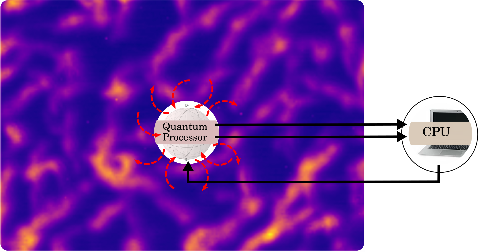
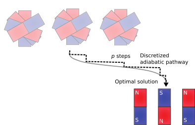

17. Quantum Approximate Optimization Algorithm#
https://strawberryfields.ai/photonics/demos/run_tutorial_machine_learning.html
We talked about gate model quantum computers, we talked about quantum annealers, and we also talked about how we implement them. And we saw when it comes to implementations, we introduce imperfections. These imperfections prevent us from running the most famous quantum algorithms on these quantum computers. And there has been a change over the last, I would say, five, six years in mentality. So we started to develop a new breed of quantum algorithms, which are called variational circuits. So these are designed for noisy and imperfect quantum computers because if we have a system which is our quantum processing unit, it’s embedded in an environment. You know, whether it’s a superconducting architecture, whether these are trapped ions, there’s always an environment. And there is some interaction going on, so you will face decoherence and equilibration– all sorts of strange process are going on. So we have this limited ability to control the system and this limits our circuit depth, for instance. What we want to do is run a short burst of calculation on the quantum processing unit, extract the results to a classical CPU, and then the circuit that we ran on the quantum computer is parametrized. So by understanding the results of a calculation, we can go back, adjust the parameters of the quantum processor, and again, run a short burst of calculation, and it becomes this iterative loop. So one of the most famous variational circuits is quantum approximate optimization, or QAOA for short, which actually draws inspiration from quantum annealing. So what we are trying to do is approximate the adiabatic pathway, but on a gate model quantum computer. So remember that what we do here is we calculate the ground state of some simple Hamiltonian, say, just the sigma x interaction at every single site. The ground state of this is just going to be the equal superposition of all states. And then we follow this adiabatic pathway.
And if we do the transition slow enough, then we can read out the ground state of the system that we are interested in, for instance, the Ising model.
So again with our quantum computer, what we do is we break this pathway up into discrete chunks. And the way we parameterize the circuit is to have a more and more accurate approximation of this transition. So at the end of it, you would actually read out the ground state just the same way as you would do it on a quantum annealer. So we have this transition that we want to approximate, so this time-evolving Hamiltonian.
So one, say, went this way, another going this way. First, we would apply the first Hamiltonian– the sigma x interaction– for some duration beta null, followed by the application of the second Hamiltonian for some duration gamma null. And then we can have subsequent time steps, and we multiply them together. So this approximation is known as Trotterization. And you can control the accuracy by increasing the p. So the more steps you have in the discretization, the more accurate your optimization is going to be. So this way, now you can formulate an optimization problem over these parameters, and do a, say, a gradient descent to actually find the ground state of your target system.
Check
The quantum approximate optimization algorithm (QAOA)…
• Noisy, intermediate-scale quantum computers are open systems. True
• You run a short burst of quantum calculation to exploit quantum effects, and have a classical feedback loop to vary the parameters of the quantum calculation.
• Approximates the adiabatic pathway to stay close to an eigenstate of the Hamiltonian. #F
Current and near-term quantum computers suffer from imperfections, as we repeatedly pointed it out. This is why we cannot run long algorithms, that is, deep circuits on them. A new breed of algorithms started to appear since 2013 that focus on getting an advantage from imperfect quantum computers. The basic idea is extremely simple: run a short sequence of gates where some gates are parametrized. Then read out the result, make adjustments to the parameters on a classical computer, and repeat the calculation with the new parameters on the quantum hardware. This way we create an iterative loop between the quantum and the classical processing units, creating classical-quantum hybrid algorithms.

These algorithms are also called variational to reflect the variational approach to changing the parameters. One of the most important example of this approach is the quantum approximate optimization algorithm, which is the subject of this notebook.
17.1. Quantum approximate optimization algorithm#
The quantum approximate optimization algorithm (QAOA) is a shallow-circuit variational algorithm for gate-model quantum computers that was inspired by quantum annealing. We discretize the adiabatic pathway in some \(p\) steps, where \(p\) influences precision. Each discrete time step \(i\) has two parameters, \(\beta_i, \gamma_i\). The classical variational algorithms does an optimization over these parameters based on the observed energy at the end of a run on the quantum hardware.
More formally, we want to discretize the time-dependent \(H(t)=(1-t)H_0 + tH_1\) under adiabatic conditions. We achieve this by Trotterizing the unitary. For instance, for time step \(t_0\), we can split this unitary as \(U(t_0) = U(H_0, \beta_0)U(H_1, \gamma_0)\). We can continue doing this for subsequent time steps, eventually splitting up the evolution to \(p\) such chunks:
At the end of optimizing the parameters, this discretized evolution will approximate the adiabatic pathway:

The Hamiltonian \(H_0\) is often referred to as the driving or mixing Hamiltonian, and \(H_1\) as the cost Hamiltonian. The simplest mixing Hamiltonian is \(H_0 = -\sum_i \sigma^X_i\), the same as the initial Hamiltonian in quantum annealing. By alternating between the two Hamiltonian, the mixing Hamiltonian drives the state towards an equal superposition, whereas the cost Hamiltonian tries to seek its own ground state.
Let us import the necessary packages first:
import itertools
import numpy as np
from qiskit import BasicAer as Aer
from qiskit import QuantumRegister, execute
from qiskit.quantum_info import Pauli
from qiskit.aqua import Operator, get_aer_backend
from qiskit.aqua.components.initial_states import Custom
from scipy.optimize import minimize
np.set_printoptions(precision=3, suppress=True)
Now we can define our mixing Hamiltonian on some qubits. As in the notebook on classical and quantum many-body physics, we had to define, for instance, an IZ operator to express \(\mathbb{I}\otimes\sigma_1^Z\), that is, the \(\sigma_1^Z\) operator acting only on qubit 1. We can achieve the same effect the following way (this time using the Pauli-X operator):
In Qiskit, Pauli matrices can be instantiated using the class Pauli. This class takes two parameters, the first for \(\sigma^Z\) and the second for \(\sigma^X\). Each parameter is a binary vector of dimension n_qubits, such that the component \(i\) is 1 if you want a Pauli matrix to apply on the \(i^{th}\) qubit and 0 otherwise. For instance, \(\sigma_1^Z \otimes \sigma_3^Z \otimes \sigma_1^X\) would be implemented using Pauli([1,0,1],[1,0,0]).
In order to build Hamiltonians and make them evolve (i.e. exponentiate them, as required in QAOA), we need to use the class Operator from Qiskit Aqua. This class constructs a Hamiltonian as a sum of products of Pauli matrices. It takes an array of size \(n \times 2\) as parameter, such that each row corresponds to a term in the sum and each term has two components: a coefficient and a Pauli object. For instance, \(3 \sigma^Z_1 + 2 \sigma^X_3\) would be written Operator([[3, Pauli([1,0,0], [0,0,0])], [2, Pauli([0,0,0],[0,0,3])]]).
To simplify the code, let’s build a function pauli_x that simply takes a qubit and a coefficient and returns the corresponding X-Pauli matrix as an Operator
def pauli_x(qubit, coeff):
eye = np.eye((n_qubits)) # the i^th row of the identity matrix is the correct parameter for \sigma_i
return Operator([[coeff, Pauli(np.zeros(n_qubits), eye[qubit])]])
The coefficient here means the strength of the transverse field at the given qubit. This operator will act trivially on all qubits, except the given one. Let’s define the mixing Hamiltonian over two qubits:
n_qubits = 2
identity = pauli_x(0, 0)
Hm = sum([pauli_x(i, -1) for i in range(n_qubits)], identity)
Hm.to_matrix()
As an example, we will minimize the Ising problem defined by the cost Hamiltonian \(H_c=-\sigma^Z_1 \otimes \sigma^Z_2\). First let’s create the functions defining the operators using the Pauli-Z matrix:
def pauli_z(qubit, coeff):
eye = np.eye((n_qubits))
return Operator([[coeff, Pauli(eye[qubit], np.zeros(n_qubits))]])
def product_pauli_z(q1, q2, coeff):
eye = np.eye((n_qubits))
return Operator([[coeff, Pauli(eye[q1], np.zeros(n_qubits)) * Pauli(eye[q2], np.zeros(n_qubits))]])
Then we define the cost Hamiltonian:
J = np.array([[0,1],[0,0]])
# itertools.product returns a list of all the pairs (i,j) lower than n_qubits
Hc = sum([product_pauli_z(i,j, -J[i,j])
for i,j in itertools.product(range(n_qubits), repeat=2)], identity)
Hc.to_matrix()
We set the number of time evolution steps \(p=1\) and initialize the \(\beta_i\) and \(\gamma_i\) parameters:
p = 1
beta = np.random.uniform(0, np.pi*2, p)
gamma = np.random.uniform(0, np.pi*2, p)
The initial state is a uniform superposition of all the states \(|q_1,...,q_n\rangle\)
To declare the initial state, we use the Qiskit Aqua class Custom. It takes two arguments: the number of qubits of the state we want to prepare, and the vector containing the amplitudes.
init_state_vect = [1 for i in range(2**n_qubits)]
init_state = Custom(n_qubits, state_vector=init_state_vect)
The initial circuit prepares the initial state
qr = QuantumRegister(n_qubits)
circuit_init = init_state.construct_circuit('circuit', qr)
We define a function evolve that takes a Hamiltonian \(H\) and an angle \(t\) and returns a circuit component made of the unitary matrix \(e^{i H t}\).
For that, we use the method evolve of the class Operator. The arguments are:
initial circuit: if we want to build \(e^{iHt} |\psi\rangle\) with \(|\psi\rangle\) an initial state. Set to
Noneif we just need \(e^{iHt}\), as in our case (we will append the initial circuit built above only at the end, not between all the exponentials).angle: the parameter t in \(e^{iHt}\)
type of the returned object: in our case, we want a ‘circuit’
quantum registers: as usual
expansion_mode: method used to compute the evolution
expansion_order: order of the approximation used for computing the evolution
def evolve(hamiltonian, angle, quantum_registers):
return hamiltonian.evolve(None, angle, 'circuit', 1,
quantum_registers=quantum_registers,
expansion_mode='suzuki',
expansion_order=3)
To create the circuit, we need to compose the different unitary matrice given by evolve.
We use the same trick as above to sum the circuits:
def create_circuit(beta, gamma):
circuit_evolv = sum([evolve(Hc, beta[i], qr) + evolve(Hm, gamma[i], qr)
for i in range(p)], evolve(identity, 0, qr))
circuit = circuit_init + circuit_evolv
return circuit
We now create a function evaluate_circuit that takes a single vector gamma_beta (the concatenation of gamma and beta) and returns \(\langle H_c \rangle = \langle \psi | H_c | \psi \rangle\) where \(\psi\) is defined by the circuit created with the function above.
We use the method eval of the class Operator in order to compute \(\langle \psi | H_c | \psi\rangle\). It takes the circuit of \(|\psi\rangle\) and a backend as argument (as well as the method to use to perform the evaluation, here "matrix")
def evaluate_circuit(beta_gamma):
n = len(beta_gamma)//2
circuit = create_circuit(beta_gamma[:n], beta_gamma[n:])
return np.real(Hc.eval("matrix", circuit, get_aer_backend('statevector_simulator'))[0])
Finally, we optimize the angles:
result = minimize(evaluate_circuit, np.concatenate([beta, gamma]), method='L-BFGS-B')
result
fun: -0.9999999999999347
hess_inv: <2x2 LbfgsInvHessProduct with dtype=float64>
jac: array([-0., -0.])
message: b'CONVERGENCE: NORM_OF_PROJECTED_GRADIENT_<=_PGTOL'
nfev: 51
nit: 7
status: 0
success: True
x: array([ 2.356, 12.174])
17.2. Analysis of the results#
We create a circuit using the optimal parameters found.
circuit = create_circuit(result['x'][:p], result['x'][p:])
We use the statevector_simulator backend in order to display the state created by the circuit.
backend = Aer.get_backend('statevector_simulator')
job = execute(circuit, backend)
state = np.asarray(job.result().get_statevector(circuit))
print(np.absolute(state))
print(np.angle(state))
[0.707 0. 0. 0.707]
[ 0.785 -1.464 -1.464 0.785]
We see that the state is approximately \(\frac{1}{\sqrt{2}} \left( |00 \rangle + |11 \rangle \right)\). It corresponds to a uniform superposition of the two solutions of the classicial problem: \((\sigma_1=1\), \(\sigma_2=1)\) and \((\sigma_1=-1\), \(\sigma_2=-1)\)
Let’s now try to evaluate the operators \(\sigma^Z_1\) and \(\sigma^Z_2\) independently:
Z0 = pauli_z(0, 1)
Z1 = pauli_z(1, 1)
print(Z0.eval("matrix", circuit, get_aer_backend('statevector_simulator'))[0])
print(Z1.eval("matrix", circuit, get_aer_backend('statevector_simulator'))[0])
1.1102230246251565e-16
1.1102230246251565e-16
We see that both are approximatively equal to zero. It’s expected given the state we found above and corresponds a typical quantum behavior where \(\mathbb{E}[\sigma^Z_1 \sigma^Z_2] \neq \mathbb{E}[\sigma^Z_1] \mathbb{E}[\sigma^Z_2]\)